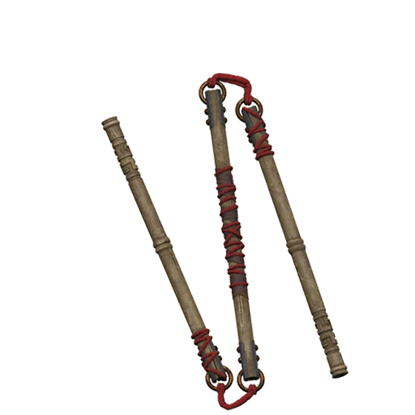

Bang - Bastão feito de madeira ou metal, utilizado como arma
básica.
 Sansetsukon - Um tipo de nunchaku de três bastões, preso por
corda ou corrente.
Sansetsukon - Um tipo de nunchaku de três bastões, preso por
corda ou corrente.
 Pilo - Lança comprida, arma romana contra cavalaria.
Pilo - Lança comprida, arma romana contra cavalaria.
 Púgio - Punhal romano, muito utilizado por status e ataques
curtos.
Púgio - Punhal romano, muito utilizado por status e ataques
curtos.
Jitte ou Jutte - Espada de defesa, similar ao Sai.
 Tachi - Espada japonesa longa e curvada.
Tachi - Espada japonesa longa e curvada.
 Kusarigama - Foice com corrente e peso na ponta.
Kusarigama - Foice com corrente e peso na ponta.